How to set up database connectivity using plsqleditor 0.3.15
First,
let us assume you have a new project called DemoProject.
It would
look something like the following:
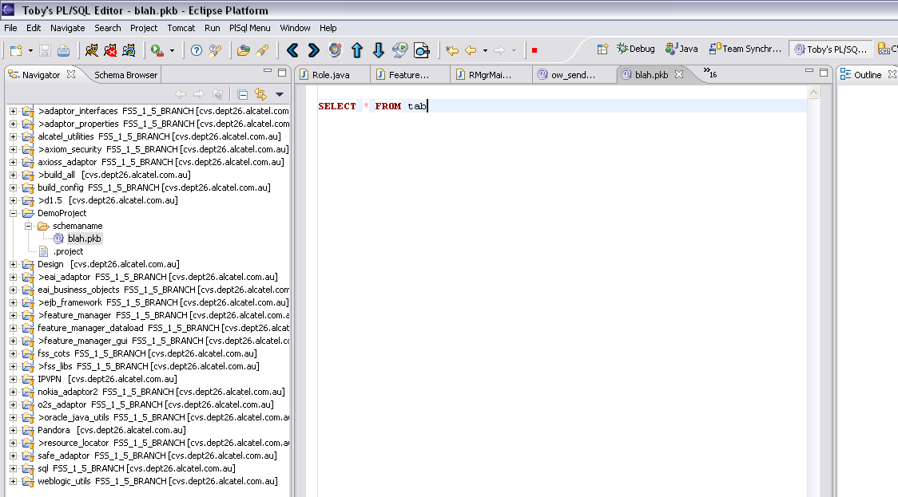
Set
up the properties for the project.
The database connectivity for
the project is now in the project properties.
The schema mapping
is here too.
You are able to set the default database
connectivity in the project preferences, however, in this demo I
will show you the project specific way of doing this.
So, first
select the properties, as the diagram below indicates
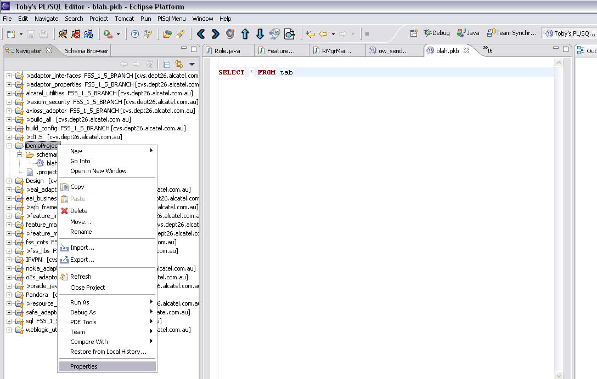
Next, select the Database Properties.
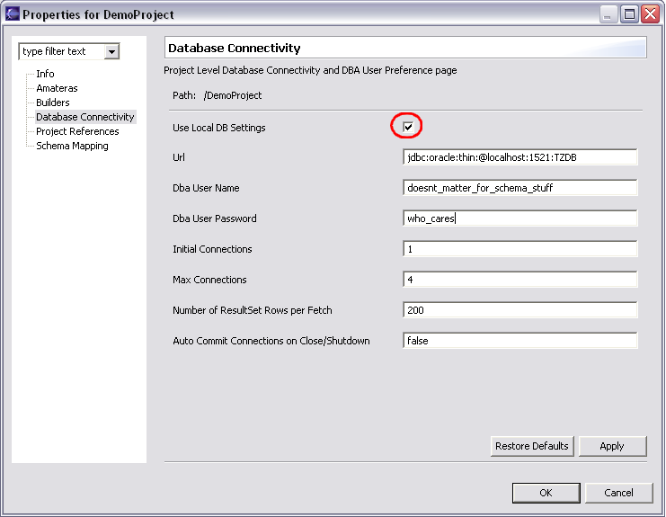
You must choose to set Use Local DB Settings to checked to get this.
The only important setting here is the URL.
The Number of ResultSet rows per fetch, Auto Commit connections on close, Initial Connections and Max Connections also affect the schema connections, but you can leave these as default.
The Dba parameters are for auto completing from the database.
Ensure that your URL is correct.
Next, select the Schema Mapping
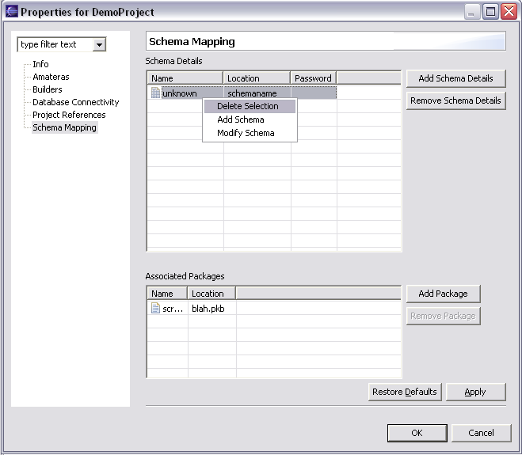
You can delete the unknown schema for your new file (the schema will by default be the name of the directory in which your file is located. If no smart name can be detected, “unknown” will be the selected name.
We will create a new schema, because the package name has not been named the default way.
If you name the file (your blah.pkb) in the format schemaname_packagename.pkb, then the schema will be detected as the first part of the file name (prior to the underscore). Otherwise you will have to do it manually. This demo does it manually.
Now, add the schema by pressing the Add Schema Details button:
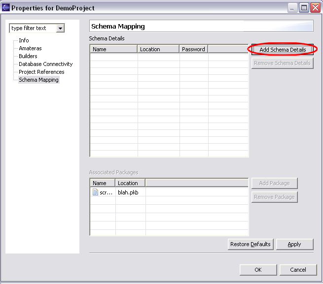
This will cause the following dialog to pop up:
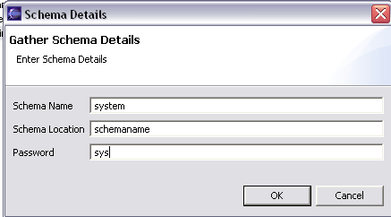
Now
you must populate the schema details (as populated above).
Important
fields:
The schema name MUST be a valid schema. For this demo, I have selected system, which is valid in every (or almost every?) oracle database.
The Schema Location is the directories (identified relative to the project base) in which your package files are located. This particular schema currently only has files (one file specifically) in ONE directory – the directory called schemaname.
The password MUST be the correct password for the schema. My system password is sys. Imaginative aren’t I?
This will cause the schema mapping page to look like this:
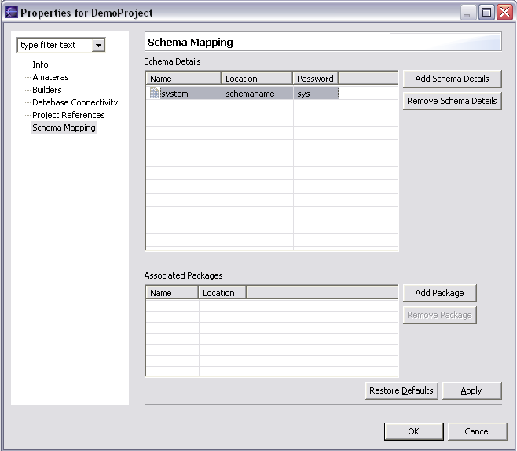
Now add the package by pressing the Add Package Button as below:
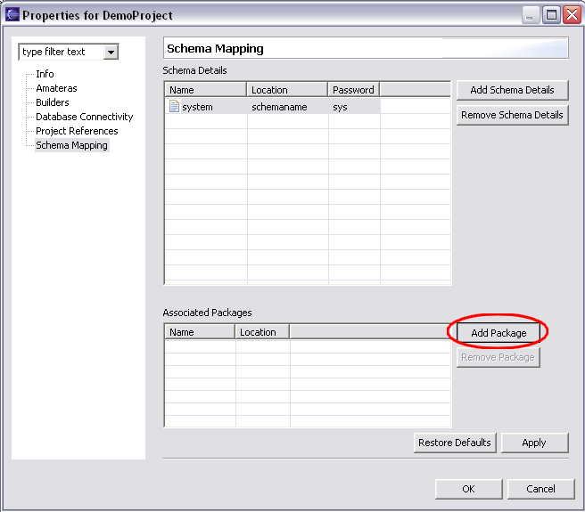
This will result in the following dialog box:
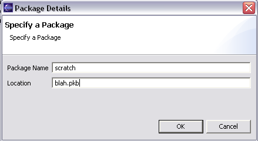
Now
populate the package details (as populated above)
Important
fields:
Package Name – this is the name of the “package” that you want the database to recognise your file as being. This only matters if you actually want your file to be a real package (and be content assistable by that name when Ctrl-Spacing in other files). Otherwise, scratch is the name I use for a scratch file for any old command.
Location – this is IMPORTANT. It MUST be the name of the file. In our case blah.pkb.
Now your Schema Mapping properties will look like this:
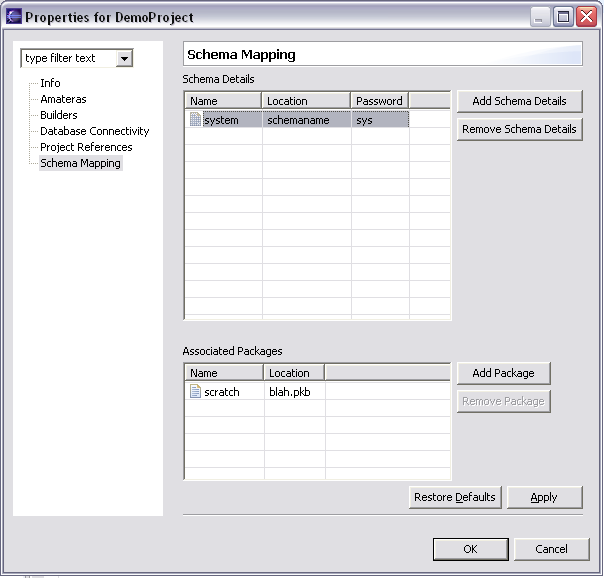
In the bigger context, these details relate in the following way:
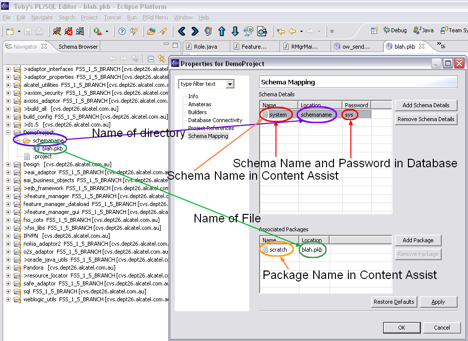
Now press OK on the Properties, and you are back in the main workspace.
You MUST close the blah.pkb file and reopen it. Annoying but required.
When you open it, it should be in the “system” schema. You can check this by pressing the debug button (seen below).
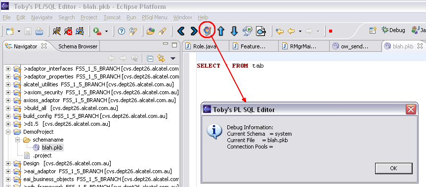
As you can see, the file blah.pkb is now in the system schema.
Now to execute the query/update. There are three techniques:
Using the key press; place the cursor on the “SELECT * FROM tab” line and press Ctrl-Alt-e. This should get the following result:
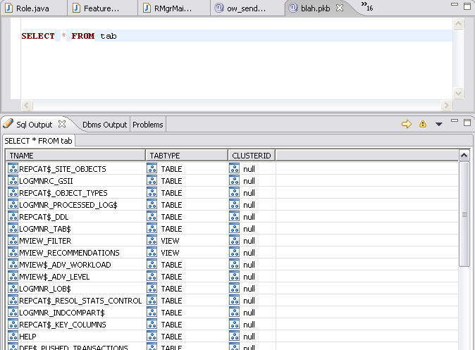
If this doesn’t work, it is because your key presses don’t work. You can always use the toolbar button:
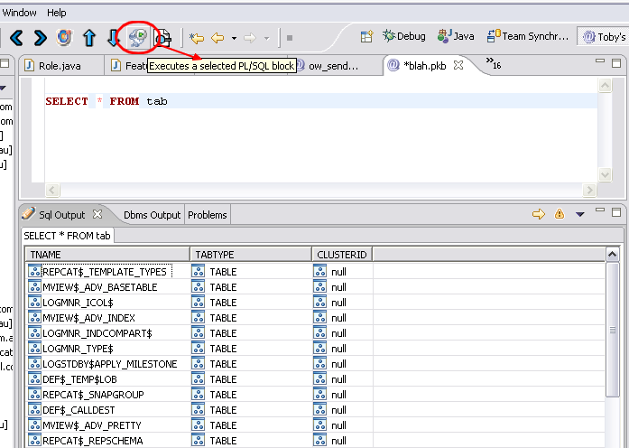
Hopefully this will work if the key press doesn’t.
If this fails, you could try the right click method:
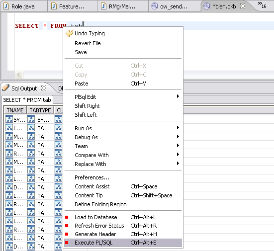
Good luck, and happy db executing…